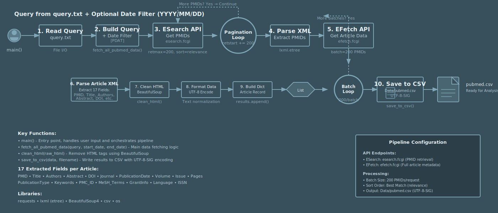
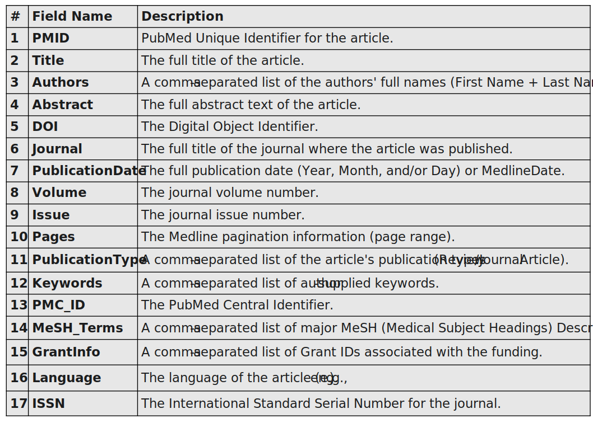

Accelerating Systematic Reviews: An AI-Aided Workflow for Synthesizing the Microplastic-Antimicrobial Resistance Knowledge Landscape
1 Report Overview
This internship report presents the methodological foundation and initial progress of an Artificial Intelligence Aided Systematic Literature Review investigating the role of microplastics in the propagation of antimicrobial resistance (AMR). The work detailed in the following sections represents the completed and ongoing efforts to construct a comprehensive and transparent review.
While the final synthesis and manuscript preparation for the associated peer-reviewed publication are forthcoming, this document offers a complete overview of the established methodology so far, the implemented data processing pipeline, and the preliminary insights that will pave the way for the review’s completion.
2 Introduction
2.1 Background: The Confluence of Two Global Crises
The Anthropocene is characterized by human-driven global changes that are reshaping planetary systems. Among the most pervasive and concerning of these are the dual crises of microplastic pollution [1], [2], [3] and antimicrobial resistance (AMR) [4], [5], [6], [7]. Each represents a formidable threat to ecosystem stability and public health, but their intersection creates a novel and synergistic challenge. Understanding the mechanisms by which these two crises converge is of paramount strategic importance for developing effective environmental and health policies for the 21st century.
Microplastic (MP) pollution has become a defining feature of our time, leading researchers to dub this era the “Plastic age.” MPs are synthetic polymer particles less than 5 mm in diameter, and their exceptional mobility and resistance to degradation have resulted in their near-ubiquitous presence in global ecosystems [8]. From freshwater rivers to deep-sea sediments, these particles act as persistent contaminants. The scale of the problem is staggering; projections estimate that global unmanaged plastic trash could reach 155–265 million metric tons per year in 2060 [9], [10], [11], [12]. This relentless accumulation of synthetic materials provides a novel and persistent substrate within natural environments, fundamentally altering microbial habitats on a planetary scale [13], [14]. Running parallel to the plastic crisis is the silent pandemic of Antimicrobial Resistance (AMR). Declared a “global public health issue” by the World Health Organization (WHO) and the Centers for Disease Control and Prevention (CDC), AMR threatens to undermine modern medicine [15], [16]. The overuse and misuse of antimicrobial drugs have accelerated the evolution of resistant microorganisms, rendering once-treatable infections deadly. The current toll is an estimated 700,000 annual deaths, a figure that is projected to escalate dramatically to 10 million by 2050 if left unchecked, surpassing the annual death toll from cancer.
These two crises converge on the surfaces of microplastics, where microbial communities colonize to form a distinct microecosystem known as the “plastisphere” [9], [17], [18], [19]. This biofilm-based habitat creates a unique ecological niche, with environmental conditions and microbial compositions that are markedly different from the surrounding water or natural particles. The plastisphere is not merely a passive carrier of microorganisms; it is a dynamic biological interface that can concentrate, protect, and foster interactions between diverse microbial taxa [20].
This review will explore the critical role of the plastisphere as a potential hotspot for the proliferation and global dissemination of antimicrobial resistance, a nexus of risk that demands urgent scientific inquiry.
2.2 Literature Context: The Plastisphere as a Vector for Antimicrobial Resistance Genes (ARGs)
The plastisphere’s emergence as a novel ecological niche is of strategic importance not only for its role in altering biogeochemical cycles but also for its potential to accelerate the dissemination of antimicrobial resistance. Microplastics function as both incubators and transport vehicles for antibiotic resistance genes (ARGs) in aquatic environments [21].

The primary mechanism by which MPs facilitate the spread of ARGs is through the creation of a high-density microbial habitat. The biofilms that constitute the plastisphere are dense, spatially structured communities where bacteria are in close physical proximity [22]. These conditions are ideal for the exchange of genetic material through Horizontal Gene Transfer (HGT), a process that includes mechanisms such as plasmid exchange and transduction [23]. This turns each particle of microplastic into a potential hub for genetic exchange. Consequently, MPs function as both a “Petri dish” for the proliferation and selection of ARGs and as a “Vehicle” for their long-distance environmental dissemination [11], [18], [20], [21], [24]. Research employs advanced techniques like metagenomic sequencing, FTIR, and Scanning Electron Microscopy (SEM) to characterize microbial communities, ARGs, and the physical properties of MPs [25], [26].
Mounting evidence demonstrates a significant enrichment of ARGs within the plastisphere compared to surrounding environments. Studies conducted in diverse aquatic ecosystems, including the North Pacific and the Huangpu River, have found that MPs harbor a higher abundance of ARGs than adjacent water columns or natural particles [27], [28], [29]. The type of plastic polymer also appears to play a critical role in shaping the microbial community and its associated resistome [30]. Research indicates that different plastic types, such as biodegradable polylactic acid (PLA) and non-degradable polyethylene (PE), can selectively enrich distinct microbial communities and ARG profiles. Counterintuitively, some studies suggest that biodegradable MPs may pose a higher ARG risk, possibly because the degradation byproducts can serve as a carbon source, stimulating microbial growth and subsequent gene transfer [14], [20], [31], [32].
Wastewater systems are a critical focal point in this process. Wastewater treatment plants (WWTPs) are not only key conduits for the release of MPs into the environment but are also recognized hotspots for antibiotic-resistant bacteria (ARBs) and ARGs [33]. Although modern WWTPs can achieve a high removal efficiency for MPs (often exceeding 90%), they are not completely effective. The MPs that are discharged in treated effluent can carry a significant load of wastewater-associated pathogens and ARGs, effectively seeding natural ecosystems with a resilient, mobile source of antimicrobial resistance [17], [18], [21], [28].
2.3 Research Gap: A Strategic Call for Global Synthesis to Unify the MP-AMR Consensus
To effectively assess and mitigate the public health risks posed by the MP-AMR intersection, a coherent, large-scale understanding of the underlying ecological dynamics is essential. However, the current body of research is characterized by a fragmentation of findings and a lack of synthesis, creating a strategic urgency to consolidate this knowledge into a unified framework.
The central research gap is the absence of a comprehensive, evidence-based consensus on the specific role of microplastics in ARG dissemination. Existing studies, while valuable, often lack unified conclusions, particularly regarding the critical question of whether different MP types selectively promote the enrichment of specific ARGs [21]. The limited scope of individual investigations, which are typically confined to specific geographic locations, plastic types, or environmental conditions, prevents a broader exploration of the complex ecological relationships that govern the plastisphere resistome across diverse spatiotemporal scales. A holistic understanding remains elusive.
This challenge is compounded by the sheer volume and rapid expansion of the relevant scientific literature. Thousands of articles have been published on factors related to environmental pollution and microbial resistance, yet a clear overview of all preceding factors and interaction between factors is missing.
Consequently, the manual screening of titles and abstracts has become a major bottleneck for researchers [29]. The scale of the data is simply too vast for traditional review methodologies to handle effectively, leaving the field without a comprehensive map of the evidence.
To bridge this critical knowledge gap, a methodological solution is required that is both systematic in its approach and powerful enough to manage the immense scale of available data. This new strategy must move beyond isolated findings to build a structured, evidence-based understanding of the intertwined threats of microplastic pollution and antimicrobial resistance.
2.4 Approach Overview: A Systematic, AI-Aided Literature Review
To address the fragmented nature of the research landscape and overcome the bottleneck of manual screening, this study proposes a novel, AI-aided systematic literature review. This methodology is strategically designed to move beyond the analysis of individual findings and create a comprehensive, evidence-based map of the field, transforming disparate data points into a structured body of knowledge.
A systematic review is the foundational component of this approach. This methodology is essential for synthesizing evidence from a large and varied body of scientific work [34], [35]. By systematically identifying, appraising, and synthesizing all relevant research on a specific topic, it allows for the creation of an “overview and strength of evidence” that is currently absent in the study of the plastisphere resistome. It provides a rigorous, reproducible framework for understanding the current state of knowledge and identifying areas for future research.
The integration of advanced Artificial Intelligence (AI) methodologies into the conduct of Systematic Reviews (SRs) is fundamentally driven by the need to manage the exponential growth in published literature and mitigate the inherent burdens associated with manual assessment, which often renders the process laborious, error-prone, and time-consuming and nearly impossible. To overcome this, an AI-powered active learning will be employed. This machine learning approach dramatically increases the efficiency of the screening process, with simulation studies showing it can “save up to 95% of screening time” [29]. The AI model in the software ASReview, operates in a “researcher-in-the-loop” process, where it learns from human decisions to continuously prioritize the most relevant records for review. This allows the research team to focus their expertise where it is most needed, ensuring both efficiency and accuracy [29], [36].
The proposed AI-aided workflow will involve a multi-phase screening process designed for both speed and precision. An initial screening phase will use a efficient model with sementic understanding to screen through the titles and abstracts and arrive at a consenses. This ensures that only few, if any, relevant papers are missed. A second phase will employ a more complex method of refining the selection of relevant articles and performing a full-text extraction, thus ensuring a high-quality final dataset.
The integration of systematic review rigor with artificial intelligence will enable this study to comprehensively map the research landscape. This powerful, evidence-based methodology will achieve specific, high-impact objectives that provide immediate and foundational value to the scientific and policy-making communities.
2.5 Objectives
This research is guided by a dual set of objectives designed not only to answer a critical scientific question but also to create a lasting and valuable resource for the global research community.
Primary Objective: To synthesize the available evidence regarding the microplastic-AMR nexus through a comprehensive, AI-aided systematic review. This synthesis will specifically identify and quantify how a wide range of ecological and physico-chemical factors, including but not limited to plastic polymer type, environmental setting (e.g., freshwater, marine, wastewater effluent), and microbial community composition, influence the enrichment and spread of ARGs.
The secondary objective: To create a rich, queryable, and publicly available database of the screened literature. This database, containing hundereds of relevant articles identified through the AI-aided screening process, will “serve as a basis for international researchers” to conduct further, more specific meta-analyses and targeted investigations. This resource will function as a “living review,” designed to be updated over time as new research is published, thereby providing a dynamic and continuously evolving foundation for the field.
This review is conducted as a key activity within the scope of the EU-funded Project TULIP (Community-based engagement and intervenTions to stem the tide of antimicrobial resistance spread in the aqUatic environments catalysed by cLImate change and Plastic pollution interactions). TULIP represents a crucial international effort to address the triple threat of microplastic pollution, antimicrobial resistance (AMR), and climate change in aquatic environments.
3 Methods
3.1 Protocol Development
This study was preregistered on the Open Science Framework (OSF) prior to data collection and analysis. The registration was completed on 18th February 2025 and outlines the primary research questions, methodological approach, and analytical strategy.
The preregistration specified the following key elements:
- Search Strategy
- Screening Procedure
- Data Extraction and Synthesis
- Research Objectives
This was done so that any deviations from the original registration could be noted in the respective methodology and results sections of the review. This implies that exploratory analyses conducted beyond the registered plan could be clearly identified to maintain transparency between confirmatory and exploratory findings.
The complete registration document, including the original timestamped research plan, is publicly available at https://osf.io/23wnh/overview, ensuring the reproducibility and verification of our research process.
3.2 Query Design
The search strategy was systematically developed and validated to ensure high sensitivity in capturing the literature at the intersection of plastic pollution and antimicrobial resistance.
Bibliographic Databases and Search String: Comprehensive electronic searches were performed across four major bibliographic databases: PubMed, Embase, Web of Science, and GreenFile. The search strategy employed a Boolean query designed to capture two core concepts:
Antimicrobial Resistance (AMR): Terms included “antimicrobial resistance”, ”antibiotic resistance”, “drug resistance”, AMR, ”resistance gene”, and “resistome*“.
Plastic Pollution: Terms included plastic, plastics, microplastic, nanoplastic, and plastisphere.
The final query used was:
("antimicrobial resistance*" OR "antibiotic resistance*" OR "antimicrobial-resistant" OR "antibiotic-resistant" OR "drug resistance*" OR "multidrug resistance*" OR amr OR "resistance gene*" OR arg OR ARGs OR "resistant bacterium" OR "resistant bacteria" OR resistome*)
AND
(plastic OR plastics OR microplastic* OR nanoplastic* OR plastisphere)The search was limited to peer-reviewed articles published in English between 1 January 2015 and 10 February 2025.
Search Validation Procedure:
To ensure the robustness and comprehensiveness of the search strategy, a formal validation was conducted using a set of benchmark articles. Sixteen key publications were pre-identified as representative of the diverse study types and themes within the field (e.g., laboratory studies, field observations, and reviews). Multiple iterations of the search syntax were tested against these articles. The final query was selected because it successfully retrieved all 16 validation articles, confirming its ability to capture a wide spectrum of relevant literature. This process validates that the search strategy possesses the necessary sensitivity to serve as a reliable foundation for the systematic mapping.
3.3 Automated PubMed Data Extraction Pipeline

A central component of this project was the development of a Python-based data extraction pipeline that automates the retrieval, parsing, and organization of literature from the PubMed database. The overarching aim of this system is to establish a foundation for AI-aided literature review, allowing for large-scale, reproducible aggregation of scientific articles.
By automating the collection of metadata such as titles, abstracts, authorship, and publication details, the system enables downstream analysis of the retreived data. This not only accelerates information gathering but also ensures methodological transparency, as every step (from querying to parsing) is reproducible.
3.3.1 Library Setup and Core Architecture
The implementation makes use of the requests, lxml, and BeautifulSoup [37], [38] libraries to interact with the PubMed Application programming interface (API) and process its XML-based responses. The E-utilities are the public API to the NCBI Entrez system and allow access to all Entrez databases including PubMed, PMC, Gene, Nuccore and Protein. The NCBI E-utilities endpoint serves as the interface for fetching article metadata [39], [40]. Each component of the pipeline plays a distinct role: requests manages HTTP communication, lxml performs efficient XML tree parsing, and BeautifulSoup ensures robust cleaning of textual data embedded in HTML or XML tags.
import requests
from lxml import etree
from bs4 import BeautifulSoup
import csv, os
base_url = "https://eutils.ncbi.nlm.nih.gov/entrez/eutils/"Here, the variable base_url defines the central API endpoint from which two specific utilities esearch.fcgi and efetch.fcgi are subsequently called. These utilities respectively perform article identification and detailed metadata retrieval [41].
3.3.2 Data Sanitization and Preprocessing
Data fetched from PubMed often contain embedded markup elements, which complicate downstream text processing. To address this, a dedicated cleaning function was implemented using the BeautifulSoup HTML parser. This function ensures that the text is free of structural tags and extraneous characters, producing plain text suitable for machine learning models and vector-based text representations.
def clean_html(raw_html):
soup = BeautifulSoup(raw_html, "html.parser")
return soup.get_text()This step is critical for maintaining the linguistic integrity of the abstracts and titles while preventing formatting artifacts from interfering with tokenization or semantic embedding stages in later analysis. It also ensures that multilingual and symbol-rich abstracts are handled consistently.
3.3.3 Querying and Fetching Data from PubMed
The heart of the retrieval system lies in the fetch_all_pubmed_data() function, which governs the two-stage data acquisition process. In the first stage, the function submits an E-Search request to identify all publication identifiers (PMIDs) associated with the user’s query, optionally constrained by a publication date range.
The function then performs iterative requests in batches, ensuring scalability and compliance with PubMed’s API rate limits. In the second stage, the E-Fetch utility is invoked to retrieve detailed article metadata corresponding to each batch of PMIDs.
The XML response is parsed using lxml, allowing structured extraction of key bibliographic fields. The fields extracted were:

During extraction, HTML/XML artifacts embedded in titles and abstracts were removed to ensure consistency in textual data. The resulting output is stored as a structured list of dictionaries and subsequently converted into a dataframe for downstream analysis. This approach ensures high fidelity retrieval while allowing flexible modification of query scope and record fields.
The implementation deliberately employs batch processing (with a default of 200 records per request) to efficiently handle large datasets while avoiding excessive memory usage. Furthermore, optional date filtering provides temporal control over the dataset, facilitating focused meta-analyses over defined publication windows.
The full implementation used in this study is available at: https://github.com/Aishwarya-Girish/Joacim-Group-IWR-Internship/blob/main/1-Article_Data/pubmed.py
Example Usage and Illustrative Simplified Code:
import requests
from lxml import etree
def fetch_all_pubmed_data(query, start_date=None, end_date=None):
"""
Simplified illustrative version:
Fetches PMIDs based on a query and retrieves core article metadata.
"""
base_url = "https://eutils.ncbi.nlm.nih.gov/entrez/eutils/"
# Optional date filter
if start_date and end_date:
query += f' AND ({start_date}[PDAT] : {end_date}[PDAT])'
# --- Step 1: Retrieve PMIDs ---
pmid_response = requests.get(
base_url + "esearch.fcgi",
params={
"db": "pubmed",
"term": query,
"retmax": 200000,
"retmode": "xml",
"sort": "relevance"
}
)
pmid_tree = etree.fromstring(pmid_response.content)
pmids = [elem.text for elem in pmid_tree.findall(".//Id")]
results = []
# --- Step 2: Retrieve details for PMIDs in batches ---
for i in range(0, len(pmids), 200):
batch = pmids[i:i+200]
detail_response = requests.get(
base_url + "efetch.fcgi",
params={"db": "pubmed", "id": ",".join(batch), "retmode": "xml"}
)
detail_tree = etree.fromstring(detail_response.content)
for article in detail_tree.findall(".//PubmedArticle"):
title = article.findtext(".//ArticleTitle", default="No title available")
abstract = article.findtext(".//AbstractText", default="No abstract available")
year = article.findtext(".//PubDate/Year", default="Unknown year")
results.append({
"PMID": article.findtext(".//PMID", default=""),
"Title": title.strip(),
"Abstract": abstract.strip(),
"Year": year
})
return results
# Example call
papers = fetch_all_pubmed_data("single-cell RNA sequencing", start_date="2015", end_date="2024")3.3.4 Data Structuring and Storage
Once the data retrieval is complete, the results are serialized and exported into a structured CSV format. The function below ensures that the output directory is automatically created if absent and that the dataset is encoded in UTF-8 to preserve non-ASCII characters in author names or abstracts.
def save_to_csv(data, filename="pubmed.csv"):
if not os.path.exists("Data"):
os.makedirs("Data")
with open(os.path.join("Data", filename), "w", encoding="utf-8-sig", newline="") as f:
writer = csv.DictWriter(f, fieldnames=data[0].keys())
writer.writeheader()
writer.writerows(data)This step transforms the raw API output into a machine-readable corpus suitable for AI-driven literature analysis, such as embedding-based similarity searches, topic modeling, and trend visualization. Each record corresponds to a distinct publication, with fields standardized across all entries.
3.3.5 Integration and Execution
The complete system is integrated through a main function that reads user-defined queries from a text file and executes the retrieval and storage workflow.
This modular design ensures reproducibility and adaptability. The system can be operated as a standalone command-line tool or integrated as a backend service within larger text-mining workflows. The resulting dataset can subsequently be fed into AI-assisted frameworks.
3.4 Hybrid Data Retrieval Strategy
In order to complement the automated PubMed pipeline, additional searches were conducted across EMBASE, GreenFILE, and Web of Science (WoS) to achieve a broader literature coverage. The query used was the same as was previously used for PubMed.
Unlike PubMed, these databases have restricted access to their APIs. EMBASE and Web of Science, in particular, require logins, institutional subscriptions or university credentials to access their APIs, advanced search features and bulk export functionalities, while GreenFILE similarly limits automated access. Consequently, it was necessary to perform manual data extraction through the web interfaces of each database.
For the databases Web of Science, EMBASE and GreenFILE, all available metadata fields along with the abstract were exported directly from the database interface. This ensured that no potentially relevant semantic or contextual information was lost prior to downstream computational analysis, which is particularly important for AI-driven literature synthesis that benefits from the full depth of structured metadata.
By exporting the entire metadata schema from each database, the resulting dataset remained maximally flexible and analytically complete. This approach avoids the methodological bias that can arise from selective field extraction.
This manual extraction process, while complete in terms of metadata retention, highlighted the practical limitations of restricted bibliographic databases when compared to the PubMed automated pipeline. Unlike PubMed, where programmatic retrieval was efficient, reproducible, and less susceptible to human transcription or export errors, the workflows for EMBASE, GreenFILE, and Web of Science required repeated manual operations. This introduced additional time burdens and increased the potential for inconsistencies in formatting and data organization across exports. As a result, the contrast between the two approaches underscored the value of automated retrieval methods in terms of speed, error reduction, and standardization — demonstrating that, where possible, API-driven pipelines provide a more robust and scalable foundation for downstream computational analysis.**
3.5 Standardization of Data
To facilitate the standardization of heterogeneous datasets from diverse platforms, a structured, machine-readable corpus suitable for the AI-aided literature review was created. By integrating these manually curated datasets with the automated PubMed collection, the framework supports large-scale text mining, cross-database analyses, and knowledge synthesis in a reproducible and systematic manner.
3.5.1 Metadata Standardization and Column Alignment
Because each database uses distinct terminology and variable naming conventions, key metadata fields (Title, Abstract, Authors, DOI, Journal) were standardized to a shared schema.
pubmed_df_new = pubmed_df[['Title', 'Abstract', 'Authors', 'DOI', 'Journal']]
wos_df_new = wos_df[['Article Title', 'Abstract', 'Authors', 'DOI', 'Source Title']].rename(
columns={'Article Title': 'Title', 'Source Title': 'Journal'})This harmonization step allowed all datasets to be concatenated into a unified dataframe (compiled_df) suitable for cross-database comparison.
3.5.2 Text Normalization for Duplicate Detection
Some records lacked DOIs, which made conventional duplicate detection insufficient. To enable robust identification of duplication based on article content, text fields were normalized by removing punctuation and enforcing consistent case formatting:
def normalize_text(text):
return ''.join([char.lower() for char in text if char not in string.punctuation])This normalization was applied to titles, abstracts, authors, and journal names to allow structural comparison even where metadata formatting differed.
3.5.3 Identification of Duplicates and Statistical Summary
Duplicates were first detected using DOIs, where available, since DOI values are globally unique identifiers. For records without DOIs, duplicates were inferred based on normalized textual similarity across key descriptive fields:
replicate_counts = df['DOI'].value_counts()
df_no_doi['Normalized_Title'] = df_no_doi['Title'].apply(normalize_text)The ouput of the script consisted of:
- The number of unique articles.
- The number of replicated entries.
- The number and proportion of records lacking DOIs.
- Replication counts among no-DOI entries across Title, Abstract, Authors, and Journal fields.
These results were exported as .csv tables and a summary .txt file for documentation and quality control.

3.6 Automated Bibliographic Metadata Retrieval
Large-scale literature reviews require the management of extensive citation libraries, where manual retrieval of reference metadata is both inefficient and prone to formatting inconsistencies. Unique identifiers such as DOIs provide a reliable key for automated access to standardized citation records, enabling reproducible and consistent bibliographic handling across heterogeneous data sources.
To operationalize this, a custom Python-based retrieval pipeline was implemented to programmatically obtain BibTeX entries for all articles in the dataset. The script accepts a CSV containing DOIs and queries the CrossRef REST API [42], [43] for each record, executing requests concurrently using a five-worker thread pool to reduce latency and improve throughput. This automated approach ensured uniform reference formatting, minimized manual intervention, and produced a structured citation corpus suitable for downstream analysis.
Each DOI request was subject to a retry policy with exponential backoff to handle temporary network failures or rate limiting. Successful responses were stored individually as .bib files in a designated output directory, with filenames normalized to ensure compatibility with local file systems. DOIs that could not be resolved or returned invalid responses were recorded separately.
def fetch_bibtex(doi, max_retries=3, timeout=15):
api_url = f"https://api.crossref.org/works/{doi}/transform/application/x-bibtex"
for attempt in range(max_retries):
try:
response = requests.get(api_url, timeout=timeout)
if response.status_code == 200:
return doi, response.text
except requests.exceptions.Timeout:
sleep(randint(1, 3))
return doi, NoneTo optimize performance when processing thousands of DOIs, the system employs concurrent programming using a thread pool. This allows multiple API requests to execute simultaneously, dramatically reducing total execution time compared to sequential processing.
def process_bibtex_entries(input_csv, output_folder, failed_csv, success_csv):
input_df = pd.read_csv(input_csv)
dois = input_df['DOI']
bibtex_results = {}
with ThreadPoolExecutor(max_workers=5) as executor:
future_to_doi = {executor.submit(fetch_bibtex, doi): doi for doi in dois}
for future in as_completed(future_to_doi):
doi, bibtex_content = future.result()
bibtex_results[doi] = bibtex_contentTo ensure reproducibility and transparency, four types of logs were generated:
| Output Artifact | Contents | Purpose |
|---|---|---|
bibtex_files/*.bib |
Individual BibTeX citation files | Input to reference managers / LaTeX |
saved_entries.csv |
DOIs successfully retrieved | Accountability and success summary |
failed_entries.csv |
DOIs that could not be fetched | Manual follow-up (e.g., publisher-restricted) |
bibtex_stats.txt |
Aggregate retrieval statistics | Workflow record-keeping and reproducibility |
This automated approach enabled high-throughput citation acquisition, ensured consistent formatting and minimized manual intervention.
The output could also be integrated with softwares such as Mendeley, Zotero and LaTeX.
3.7 ASReview : A Scalable, AI-Augmented Framework for Accelerating Systematic Literature Review
ASReview functions as an AI-aided Systematic Reviewing tool, specifically engineered as an open-source machine learning framework that aims to aid in efficient and transparent systematic reviews [29], [36].
3.7.1 Server Setup and Sotware Overview
A server-based instance of the open-source software framework ASReview was deployed at the Interdisciplinary Center for Scientific Computing (IWR) at Heidelberg University. This setup provides a high-performance, multi-user platform for the AI-aided screening of scientific literature.
Its primary task is the semi-automation of the demanding literature screening phase (titles and abstracts), aiming to streamline the identification and selection of primary studies. This approach leverages an Active Learning (AL) pipeline, integrating a transformer-based language model for semantic feature extraction and a robust ensemble classifier for prioritization, demonstrating a principled methodology to drastically reduce the manual screening burden while preserving the rigorous recall demanded by systematic review standards.
3.7.2 Methodological Framework
The ASReview pipeline is engineered around an iterative Active Learning (AL) cycle, designed to minimize the cardinality of the manually screened set required to identify nearly all relevant documents. Formally, given a corpus of \(N\) documents \(D = \\{d_1, d_2, ..., d_N\\}\), the AL algorithm iteratively selects a document \(d^*\) from the unlabeled pool \(U_t\) for labeling by a human reviewer (the ‘oracle’).
This selection is made by a query strategy, which acts as a ranking engine. After each human labeling action, the model reassesses the entire unlabeled pool, predicting the probability of relevance for every document. It then identifies and promotes the single most promising document (the one with the highest predicted relevance) to the top of the screening queue. This dynamic re-ranking ensures the reviewer is always presented with the next most likely relevant record, effectively rearranging the pile in real-time to maximize screening efficiency.
The working pipeline for this model is comprised of these five synergistic components that can be customized for the best desired output:
- Feature Extraction
- Classification Algorithm
- Query Strategy
- Balancing Strategy
- Stopping Rule
3.7.3 Feature Extraction
A feature extractor is a model that transforms raw data into a compact set of informative variables for downstream analysis or prediction. This function \(\phi: d_i \rightarrow \mathbf{x}_i \in \mathbb{R}^{768}\) maps a document’s text to a dense vector representation.
In this case, the all-mpnet-base-v2 model was employed, a variant of Sentence-BERT (Bidirectional Encoder Representations from Transformers).
This model is based on the microsoft/mpnet-base architecture, a pre-trained Transformer network that uses masked and permuted language modeling objectives to develop a deep, contextual understanding of language. It was further fine-tuned on a massive dataset of over 1 billion sentence pairs using a contrastive learning objective. The training aim was to minimize the distance between embeddings of semantically similar sentences (e.g., paraphrases) while maximizing the distance between dissimilar ones, creating a semantically meaningful 768-dimensional latent space.
Unlike dataset-specific methods like Doc2Vec, the dimensions of an SBERT embedding are not directly interpretable but are fixed, abstract features learned during this large-scale pre-training, capturing complex linguistic properties.
3.7.4 Classification Algorithm
A Random Forest (RF) classifier was utilized, an ensemble of \(K\) decision trees \(\\{T_1, T_2, ..., T_K\\}\). In a random forest classifier, each tree \(T_k\) is grown on a bootstrapped sample of the training data and a random subset of the \(m\) features, injecting robustness. The final relevance probability for a document with embedding \(\mathbf{x}_i\) is given by:
\[ \hat{y}_i = \frac{1}{K} \sum_{k=1}^{K} T_k(\mathbf{x}_i) \]
This ensemble approach is particularly effective in the AL context. Its inherent stability mitigates overfitting to the small, imbalanced labeled sets \(L_t\) prevalent in early screening stages. Furthermore, its non-parametric nature allows it to capture complex, non-linear decision boundaries in the SBERT embedding space, making it exceptionally powerful for identifying the sparse, heterogeneous relevant records in the later stages of screening.
3.7.5 Query Strategy
The system employs a maximum certainty query strategy, selecting for review the document with the highest predicted probability of relevance.
\[ d^* = \arg\max_{d_i \in U_t} \hat{y}_i . \]
Where: - \(d^*\) = the selected document for labeling - \(U_t\) = set of unlabeled records at time \(t\) - \(\hat{y}_i\) = predicted relevance score for document \(d_i\)
This approach directly prioritizes the records most likely to be relevant.
3.7.6 Balancing Strategy
To counteract the extreme class imbalance (typically >95% irrelevant records), a dynamic balancing algorithm was used to ensure the training data for the RF contains a representative ratio of relevant and irrelevant instances, preventing classifier bias.
3.7.7 Stopping Rule
The process can be terminated by a formal stopping rule, such as achieving a pre-specified Work Saved over Sampling (WSS) value, which quantifies the fraction of screening saved at a target recall level \(R\):
\[ \text{WSS}@R = 1 - \frac{\text{records screened to find } R \times \text{total relevants}}{N} \]
Example from ASReview output: - \(\text{WSS}@0.95 = 0.85\): 85% work saved finding 95% of relevant studies - \(\text{WSS}@0.90 = 0.90\): 90% work saved finding 90% of relevant studies
3.7.8 Visualizing the Feature Space
The superiority of the SBERT-RF synergy is rooted in the quality of the feature space. A deeper understanding and good illustration for the same can be found here.
In their example, they project embeddings from three different feature extractors—TF-IDF, Doc2Vec, and SBERT—for a set of simple sentences onto two dimensions using Principal Component Analysis (PCA).
- TF-IDF & Doc2Vec: These methods typically produce clusters based on keyword overlap or shallow semantic similarity. For instance, “I love cookies” and “I hate cookies” may be placed close together due to the shared word “cookies,” failing to capture their opposing sentiments.
- SBERT: The transformer-based embeddings create a geometrically superior layout. Sentences are clustered by semantic meaning rather than just lexical overlap. “I love cookies” and “I love cake” form one cluster (positive sentiment about food), while “I hate cookies” and “I hate cake” form another (negative sentiment). The sentence “I like desserts” is appropriately positioned near the positive cluster. This nuanced representation provides the RF classifier with a highly discriminative space in which to learn an effective decision boundary for relevance.
Thus, by deploying a high-performance, server-based ASReview instance and leveraging the advanced representational capabilities of SBERT coupled with the stable, non-parametric learning of Random Forests, a scalable and scientifically rigorous solution to the systematic review bottleneck was provided.

3.8 Preliminary Data Extraction using ChatGPT
After the relevant papers are retrieved from the ASReview screening, specific information such as source, plastic types, methods used, and other key information need to be extracted. Performing this task manually across hundreds of papers is both time-intensive and cognitively demanding. The goal of this code is to evolve into a general-purpose information scanning framework that can automatically interpret such fields and extract domain-specific information based on user-defined criteria by employing a large language model (LLM).
3.8.1 General Setup
The implementation begins by setting up the Python environment using the pandas and openai libraries. Pandas handles data loading and CSV operations [44], while the OpenAI library [45] enables interaction with the GPT model through an authenticated API client. The script reads an input CSV file containing research paper titles and abstracts into a DataFrame and verifies the presence of both required columns. This ensures the dataset is properly structured for analysis. Finally, a results list is initialized to store each paper’s title, abstract, and extracted information identified by the model.
3.8.2 Explanation of Iterating Through Rows and Fetching Data from the ChatGPT API
This code integrates ChatGPT (via the OpenAI API) to automatically extract structured information from research papers, using fields such as the title and abstract.
While this basic example illustrated below focuses on identifying polymers, sample source and classifying papers as review or primary studies, the approach is general-purpose and can be adapted to extract any form of domain-specific information — such as methods, materials, results, or keywords — depending on the research goal.
The most critical component is the prompt, which defines the model’s role, task, and expected output format. A well-designed prompt ensures that ChatGPT interprets scientific text accurately and returns consistent, structured responses suitable for large-scale automated analysis.
for _, row in df.head(100).iterrows():
title = str(row["Title"])
abstract = str(row["Abstract"])
text = f"Title: {title}\nAbstract: {abstract}"
# Step 3: Prompt ChatGPT for plastics, paper type, and source type
prompt = f"""
You are an expert in environmental and materials science, specialized in analyzing research literature.
Read the following research paper title and abstract, and identify three pieces of information:
1. **Plastics or Polymers**: List all types of plastics or polymers mentioned.
- If none are mentioned, return 'None'.
2. **Paper Type**: Determine whether the paper is a 'Review Paper' or a 'Primary Study'.
- A review paper summarizes prior research.
- A primary study presents new experiments or data.
3. **Source Type**: Identify the environmental or sampling source being studied.
- Examples: River, Estuary, Bay, Lake, Reservoir, Mangrove, WWTP Effluent, Open Ocean, Marine, Intertidal Zone, etc.
- If unclear, return 'Unknown'.
4. **Method_AR_Detection**:Summarize the antibiotic resistance detection methodology
- Examples: qPCR, PCR, Metagenomics, sequencing platforms, reference databases, bioinformatics tools, etc.
Return your answer strictly in JSON format as:
{{
"plastics_found": "...",
"paper_type": "...",
"source_type": "...",
method_ar_detection: "..."
}}
Text:
{text}
"""
# Step 4: Query ChatGPT
response = client.chat.completions.create(
model="gpt-4o-mini",
messages=[
{"role": "system", "content": "You are a scientific text analysis assistant."},
{"role": "user", "content": prompt}
]
)
# Step 5: Extract and parse response
content = response.choices[0].message.content.strip()Results:
| Title | Abstract | Plastics Found | Paper Type | Source Type |
|---|---|---|---|---|
| Plastic Polymers And Antibiotic Resist… | Microbial colonization of plastic… | PVC, PE | Primary Study | Ross Sea |
| The Variation Of Various Microplastics On… | Wastewater treatment plants (WWTP… | PET, PE, PLA, PVC | Primary Study | WWTP |
| Marine Plastisphere Selectively Enriches… | Several studies have focused o… | PE, PP, PS, PVC | Primary Study | Marine |
| Taxonomic Variation, Plastic Degradation… | Wastewater treatment facilities… | LDPE, nylon-6, PET, polylactic acid, oxygen | Primary Study | WWTP |
| Bioplastic Accumulates Antibiotic And Me… | The oceans are increasingly pol… | polyhydroxyalkanoate, polyethylene terephthalate (PET) | Primary Study | Marine |
| Effects Of Microplastics On Antibiotic Re… | Microplastics and antibiotic res… | PE, PVC, PVA | Primary Study | Estuary |
| Microplastics Shape Microbial Interactor… | Wastewater treatment plants (WW… | polyethylene terephthalate, silicone resin | Primary Study | WWTP |
| Plastisphere Showing Unique Microbial… | Plastisphere (the biofilm on micr… | PVC | Primary Study | WWTP |
| Size Effects Of Microplastics On Antibiotic… | Microplastics (MPs) in aquatic… | polyethylene, polypropylene, polystyrene | Primary Study | River |
| Metagenomic Analysis Reveals The Effects… | Sewage sludge is recognized as b… | PE, PET, PLA | Primary Study | WWTP |
| Microplastics Exacerbate The Ecological… | Wetlands are vital components o… | polyethylene, polypropylene | Primary Study | Lake |
| Responses Of Bacterial Communities And… | In present study, copper (Cu), Zn… | - | Primary Study | Sewage |
| Antibiotic Resistance Genes In Biofilms Of… | Plastic wastes are ubiquitous i… | PE, PP, PET | Primary Study | Estuary |
| Distribution And Potential Ecological Ris… | The interaction between microplast… | Polyethylene, Silicone | Primary Study | Bay |
| Source Antibiotics Degradation And High-Ris… | Microplastics (MPs) are increasin… | - | Primary Study | Urban aquatic ecosystems |
| Riverine Microplastics And Bacterial Co… | Microplastics could serve as mat… | PP, PET | Primary Study | River |
| Microplastics Affect Bacterial Communiti… | Along with global plastic produc… | PE, PP, PVC, PET | Primary Study | Estuary |
| Combined Environmental Pressure Induce… | The characteristics and dynamic poly… | polylactic acid | Primary Study | Unknown |
| Size-Dependent Promotion Of Micro/Nano… | Constructed wetlands (CWs) has poly… | PS | Primary Study | Unknown |
| Understanding The Mechanism Of Micropl… | The pervasive presence of micropl… | PHA, PLA | Primary Study | Unknown |
| Size-Dependent Effects Of Microplastic… | Microplastics (MPs) were combined, … | PE, PET | Primary Study | Unknown |
| Tetracycline Accumulation In Biofilms Enh… | Microorganisms are present in … | - | Primary Study | Unknown |
4 Conclusion
The intersection of microplastic (MP) pollution and antimicrobial resistance (AMR) represents a synergistic and escalating threat to global environmental and public health. Research into this progression is critical, yet the field is hampered by fragmented findings and an exponential growth in scientific literature that has overwhelmed traditional review methodologies.
The primary achievement of this project, as detailed in this report, is the design and implementation of a robust, scalable, and transparent methodological framework. This integrated pipeline provides a powerful solution to the research bottleneck, creating a systematic pathway to consolidate disparate evidence. This commitment to methodological rigor is further underscored by the preregistration of the study protocol on the Open Science Framework prior to data collection. The pipeline is therefore not merely a tool for this review, but a methodological model for imposing structure on similarly complex and rapidly expanding research domains.
The project’s principal innovation is a multi-stage, reproducible workflow that systematically integrates data retrieval, unification, and analysis. This pipeline addresses the entire evidence synthesis lifecycle, from initial literature search to preliminary data extraction.
- Automated and Hybrid Data Retrieval: An automated Python pipeline was developed and deployed for the PubMed database, leveraging its open Application Programming Interface (API) to ensure efficient, transparent, and reproducible data collection. This was complemented by manual data extraction from restricted-access databases—EMBASE, Web of Science, and GreenFILE. This hybrid strategy maximized literature coverage while providing a stark demonstration of the superiority of open-access APIs for enabling large-scale, reproducible science.
- Rigorous Data Unification: Data from heterogeneous sources were systematically harmonized into a single, clean corpus through a process of metadata standardization, text normalization, and multi-tiered deduplication. This step was critical for creating the unified, machine-readable corpus that is essential for the effective training and application of the downstream machine learning models.
- Accelerated and Intelligent Screening: The deployment of the ASReview framework provided a principled solution to the manual screening bottleneck. The synergy between advanced feature extraction using the SBERT all-mpnet-base-v2 model, which creates a semantically rich vector space, and a robust Random Forest ensemble classifier, which excels at identifying complex patterns within that space, enabled a highly efficient active learning process. This “researcher-in-the-loop” approach, where the model learns from human decisions in real-time to continuously refine its predictions, dramatically increases efficiency by prioritizing the most relevant articles for review.
- Proof-of-Concept for Automated Data Extraction: A successful preliminary application of a Large Language Model (LLM), specifically ChatGPT, demonstrated a viable pathway for automating the final, labor-intensive stages of data synthesis. The model was effectively prompted to extract critical, structured data (such as specific plastic polymer types, environmental settings, and antimicrobial resistance genes (ARGs)) directly from unstructured abstracts, establishing a proof-of-concept for a general-purpose information extraction tool.
By successfully integrating these advanced components, this project has established more than just a tool for a single review; it has created a methodological blueprint for conducting future large-scale systematic reviews in any rapidly evolving scientific field. It can enable rapid synthesis of evidence needed to inform policy and intervention strategies in other fields facing similar “big literature” challenges. This framework is the engine that will directly power the achievement of the project’s dual objectives: the comprehensive synthesis of evidence on the MP-AMR nexus (the primary objective) and the production of a publicly available, queryable database (the secondary objective).
The work is also strategically aligned with the overarching goals of the EU-funded TULIP project (Community-based engagement and intervenTions to stem the tide of antimicrobial resistance spread in the aqUatic environments catalysed by cLImate change and Plastic pollution interactions), positioning it as a key contribution to the international effort to address the triple threat of microplastics, AMR, and climate change. While this methodological foundation is strong, a transparent discussion of its current limitations is essential for contextualizing the results and charting a clear course for future work.
5 Limitations
The following limitations are presented not as shortcomings, but as a transparent and critical assessment of the study’s current boundaries. These limitations are inherent to the phased nature of large-scale evidence synthesis and serve as a direct guide for the subsequent stages of research and development.
- The current study is a forthcoming activity. Therefore, the primary limitation is that no scientific conclusions regarding the state of the field have yet been drawn from the collected data.
- The automated pipeline developed for PubMed demonstrated exceptional efficiency and reproducibility. However, the restricted API access for EMBASE, Web of Science, and GreenFILE necessitated manual data extraction. This reliance on manual processes introduced potential for human error, reduced the overall reproducibility of the data collection phase, and incurred significant time costs, creating a methodological bottleneck that contrasts sharply with the efficiency of the automated PubMed workflow.
- The automated BibTeX retrieval pipeline, while efficient, relies on the availability of DOIs and the responsiveness of the CrossRef API. A small number of articles either lacked a DOI or could not be fetched due to API restrictions or publisher-specific barriers, requiring manual entry and introducing a minor inconsistency in the bibliographic management process.
- The search was limited to articles published in English between January 1, 2015, and February 10, 2025. This scope may inadvertently exclude relevant foundational studies published before or after this time period. It could also miss out on important research documented in non-English languages, defining a clear boundary for the generalizability of the eventual findings.
- Both the AI-aided screening in ASReview and the preliminary LLM-based data extraction are highly dependent on the quality, clarity, and completeness of article titles and abstracts. Poorly written or uninformative abstracts could lead to two potential errors: relevant studies being incorrectly screened out (false negatives) during the review phase, or key data points being missed or inaccurately extracted during the automated analysis phase.
- The preliminary data extraction using ChatGPT was confined to titles and abstracts. A comprehensive full-text analysis was not feasible at this stage because many articles are not open access, preventing their text from being processed through a cloud-based API. To perform a full-text analysis in the future, it would be necessary to install and run a local LLM, ensuring compliance with copyright and licensing restrictions for non-open-access publications.
Acknowledging these constraints is fundamental to scientific rigor and is integral to contextualizing the project’s current outputs and validating its scientific trajectory. With these limitations and boundaries in mind, we can move forward efficiently and transition from refining our tools to strategically extracting meaningful scientific insights in the next phase.